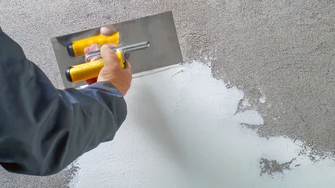

DESDE LA TIERRA AL CIELO
PRODUCTOS
En Holcim pensamos que el cliente está primero. Por ello, escuchamos sus necesidades específicas para suministrarle y, si es necesario, desarrollar junto a él la mejor solución para satisfacerlas. Como miembro de Grupo Holcim, líder en materiales de construcción, proveemos la más amplia gama de cementos, hormigón, agregados. Usted también puede confiar en nuestra capacidad de investigación y desarrollo de vanguardia para encontrar la solución para su proyecto de construcción, ya sean grandes o pequeños, sea cual sea su sector y en todo el país.
CEMENTOS
Holcim dispone del más amplio rango de cementos de alta calidad del mercado que ofrecen muchos beneficios a hormigoneras, industriales, constructoras, corralones, ferreterías, albañiles y autocontructores: Incremento de productividad con cementos alta resistencia inicial, optimización de contenidos de cemento con cementos de alta resistencia final, mejora del desempeño ambiental con cementos de bajo CO2, así como otros cementos especiales con alto valor agregado como los cementos de albañilería.
HORMIGONES
La tecnología que posee Holcim, permite producir hormigones que satisfacen las más variadas exigencias que impone el mercado. Además de hormigones estándares, Holcim diseña el hormigón según los requerimientos de cada obra. Todos con dosificaciones generadas en sistemas informáticos y operaciones de carga con equipos automatizados.
REVOQUES
Los revoques de Holcim están confeccionados con las últimas tecnologías, permitiendo una elevada blancura para perfeccionar aún más la excelente terminación de sus paredes.
PEGAMENTOS
Holcim ofrece variedades de pegamentos diseñados con la última tecnología que permiten lograr una mayor adherencia y una fácil trabajabilidad en las diferentes obras. Adhesivos cementicios para colocación en interiores y exteriores, de cerámicos de alta absorción y de mosaicos de todo tipo.
IMPERMEABILIZANTES
Presentamos GacoFlex, la nueva línea de productos impermeabilizantes para la construcción. La marca Gaco deriva de la adquisición que el Grupo Holcim hizo de Firestone Building Products a nivel global. Se estrena con TechoProtec, la línea de impermeabilizantes líquidos acrílicos.
CALES
Las cales Holcim están producidas a base de materia prima de alta pureza y mediante un proceso de hidratación controlado que permite obtener un producto de excelentes propiedades para todo tipo de usos en trabajo de albañilería.
LIGANTES HIDRÁULICOS
Los ligantes hidráulicos de Holcim están especialmente desarrollados para la estabilización de suelos y caminos agrícolas. Representan una solución rentable, innovadora y ecoamigable.
AGREGADOS PÉTREOS
Dentro de su cartera de productos, Holcim cuenta con agregados pétreos de diversas granulometrías que contribuyen a la elaboración de distintos materiales de construcción para el desarrollo de nuestro país. Para la comercialización de este producto Holcim cuenta con un centro de despacho ubicado en su planta de Malagueño (Córdoba) con posibilidad de distribución en camión y en tren.